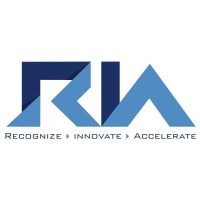

University of Illinois Urbana-Champaign
Master of Science in Computer Science
- GPA: 3.96 / 4.00
- Relevant coursework: Cloud Computing Applications, Deep Learning for Computer Vision, Software Engineering
Aryaman Nasare
I'm Aryaman Nasare — CS Grad @ UIUC (GPA 3.96/4.00). I build backend services, automation, and applied AI features with an emphasis on reliability, performance, and clean engineering.
Who I am and what I do.
I'm a computer science graduate student at the University of Illinois Urbana-Champaign, focused on building intelligent software that is reliable, scalable, and production-ready. My background spans software engineering, automation, data systems, and AI.
I started my journey in India, where I worked on engineering projects and gained hands-on experience in cloud systems and automation before moving to the U.S. to deepen my foundation in algorithms, systems, and applied AI.
I'm currently seeking software engineering roles where I can work on meaningful systems, learn from strong engineers, and ship work that matters at scale.
Academic background and coursework highlights.
Work across automation, data systems, and backend engineering.

Code that solves real problems.

Designed and built a full-stack, multi-tenant platform for secure document management, team activity notifications, and AI-assisted chat. Implemented JWT auth with centralized Express middleware for team-membership/creator authorization, plus CORS allowlisting for strict tenant isolation. Added an embeddings + vector similarity RAG pipeline over uploaded documents for context-aware answers inside private workspaces.

Built an end-to-end few-shot fine-tuning pipeline enabling Studio-Ghibli-style generation from only 5–7 image–text pairs; containerized with Docker for reproducible reruns. Automated LLM-assisted caption rewriting across an 800+ image dataset and used a two-token identifier strategy to improve subject/background disentanglement, reaching 0.914 foreground CLIP similarity.
Extended the Mini-SWE-Agent framework to resolve GitHub issues by building 10 structured tools (regex search/replace, linter, memory search) for code navigation and patching via a tool-call protocol. Achieved a 70% resolution rate (28/40) on SWE-bench Verified (Django, Matplotlib), improving 2.3× over baseline (12/40) with iterative validation inside a Docker sandbox.
Technologies and tools I work with.
Want to collaborate, chat about a role, or discuss a project? Reach out to me here...